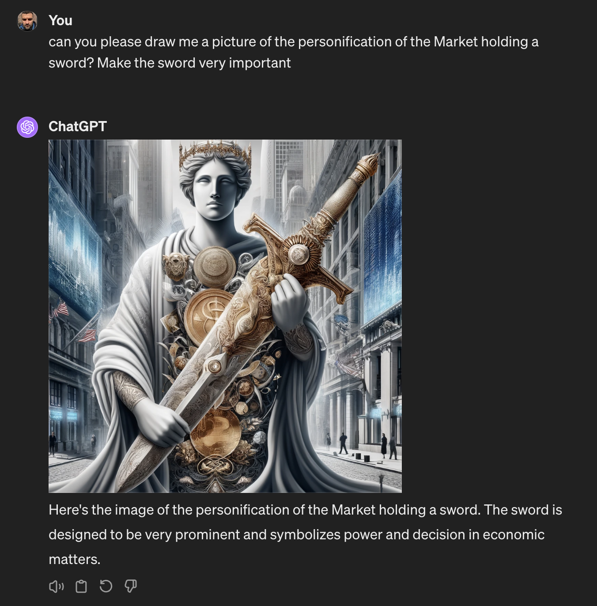

Sometimes you are the samurai, sometimes you are the sword
When I worked at a small startup and was a co founder and the lead engineer I took many decisions.
The startup went bust out of money and I found another job at a company that actually worked and made money.
But on that company I was just another engineer. Sometimes people just told me to do stuff. I didn't understand the reasons to do stuff so much.
It took me sometime to be ok with that. "just taking orders" didn't sound good to me.
But then I learned that we are all finite and I won't be able to know everything to take the best decisions always.
Some other people may know different things than me and they may make better decisions.
But I was still useful. I was coding and building stuff. Why I was building that thing? Meh.. not 100% sure. But it's ok.
Later in the same company I became a manager. I had to make more decisions now and tell people to do stuff.
I could spend a lot of time telling them the why. "giving them context" is the jargon. But time may be prohibitive.
So I told them to do stuff.
They sometimes didn't like the sound of that.
As a manager I have to make people be ok with situations. Even if they don't like it.. make them understand and endure the suffering.
I don't use these exact words but in my mind I made a mental model of the situation: sometimes you are the samurai, sometimes you are the sword.
When you are a developer you make a 1000 decisions a day. Stuff like "should I rewrite this whole function or slap an IF right in the middle of it and keep going?"
Right then and there you are the samurai. You hold the sword.
But maybe all that code you wrote is wrong because the product team found out, after talking to customers, that we were all building the wrong thing... So they tell you do delete everything and build something different.
You are the sword, now.
But it's not terrible to be a sword. A sword needs to be sharp. A sword has one specific job. A narrow but powerful job. It's not good or bad to be a sword.
You may disagree with me. Good for you. And you may think that you never want to be a sword again and that you will go open your own company and take over your destiny! Meh. You will still be a sword of a bunch of other people.
Investors, customers...
You are always the sword of the market.
